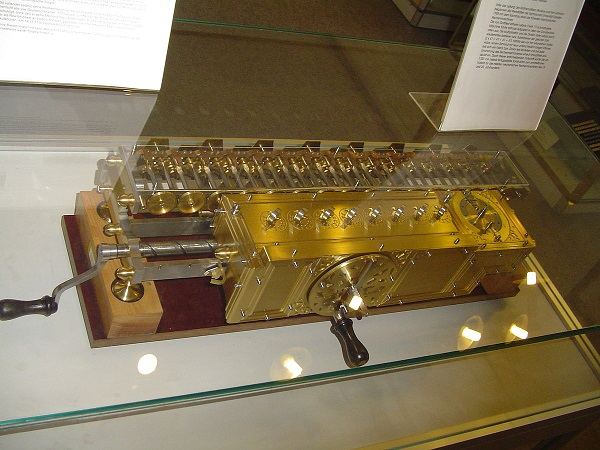

Кратко о Философии
Немецкий ученый-математик, юрист и философ Готфрид Вильгельм Лейбниц (1646 — 1716) считается последним видным представителем философии Нового времени и предшественником немецкой классической философии.
Лейбниц принадлежал к философскому направлению рационализма. В сфере его исследования основными являлись проблемы: субстанции и познания. Изучив теории Декарта и Спинозы о субстанции, Лейбниц пришел к выводу об их несовершенстве.
Монадология
Многообразие мира и постоянное взаимодействие в нём различных сред нельзя объяснить без существования мельчайших единиц бытия – тех, что в Древней Греции именовали атомами. Но так как материя – производная разновидность силы и энергии, то и атомы, согласно философии Лейбница, должны являться не материальными, а духовными объектами. Они не частицы вещества, а сгустки энергии и силы, а так как действующая сила в любом случае предполагает наличие воли, то «энергетические атомы» неизбежно должны обладать зачатками сознания и личности. Эти «истинные атомы природы» Лейбниц именует «монадами». Лейбниц выражает этим ту мысль, что его «силовые» атомы, подобно демокритовским материальным, являются простыми, однородными, лишёнными всякой внутренней сложности субстанциями. Это – сгустки «чистой воли», без всяких составных примесей.
Монады неделимы. «Единого духа» не существует, действительным существованием владеют лишь индивидуумы. Подтверждение того, что протяженной материи, как таковой, не существует, Лейбниц видел в открытии, при помощи микроскопа, инфузорий в водяных каплях: там, где, казалось, существует лишь безжизненная протяженная материя, на самом деле обнаружились бесчисленные живые существа. Таким образом, протяженная материя есть только внешнее явление и никоим образом не принадлежит к миру действительно существующего, к нематериальному миру монад. Монады Лейбница однородны в смысле обладания личностью и волей, однако не одинаковы. Каждая из них отличается одна от другой степенью совершенства своей внутренней деятельности. Монады представляют последовательную лестницу неодинаково развитых существ (градацию совершенств). Одни из них развиты выше, другие ниже. Низшие лежат в основе низших, а высшие – высших явлений действительного, телесного и духовного, мира. Человеческое тело есть собрание монад, которые к монадам души относятся как низшие к высшим.
…действие …малых восприятий гораздо более значительно, чем это думают. Именно они образуют те, не поддающиеся определению вкусы, те образы чувственных качеств, ясных в совокупности, но не отчётливых в своих частях, те впечатления, которые производят на нас окружающие нас тела и которые заключают в себе бесконечность, — ту связь, в которой находится каждое существо со всей остальной Вселенной. Можно даже сказать, что в силу этих малых восприятий настоящее чревато будущим и обременено прошедшим, что всё находится во взаимном согласии… и что в ничтожнейшей из субстанций взор, столь же проницательный, как взор божества, мог бы прочесть всю историю Вселенной…
Г. В. Лейбниц, "Новые опыты о человеческом разумении".
Математика
Первым крупным достижением Лейбница в области математики, стало усовершенствование арифмометра Паскаля. Машина умела только складывать и вычитать, однако, Лейбниц, преодолев значительные технические трудности, научил арифмометр умножать, делить и извлекать квадратные корни. Творение Готфрида Вильгельма было сконструировано и изготовлено в кратчайшие сроки, буквально за несколько месяцев. Из Парижа Лейбниц ненадолго съездил в Лондон, где продемонстрировал своё изобретение членам английской академии наук, и, как следствие, почти немедленно 27-летний Лейбниц становится её членом.
Вернувшись в Париж, Лейбниц изучает работы Паскаля, Декарта, Ферма и других математиков, посвящённые изучению кривых. Результатом изучений стало создание принципиально новой математической теории - дифференциального исчисления. Лейбниц смог создать целый аппарат классического дифференциального исчисления: он ввёл понятие функции и производной, выписал таблицу производных, сформулировал правило дифференцирования произведения и дифференцирования сложной функции, ввёл понятие интеграла, знак интеграла и знак дифференциала, научился использовать ряды для интегрирования функций и решения дифференциальных уравнений.
Способ мышления у Лейбница был такой. Он считал, что вся математика, так же как и вся наука, находится внутри нас, и с помощью одной философии можно до всего додуматься, если внимательно прислушаться к процессам, происходящим внутри нашего разума. Таким методом он открывал различные законы и иногда очень успешно. Например, он открыл, что d(x+y)=d(x)+d(y), и это замечательное открытие немедленно заставило его задуматься о том, чему же равен дифференциал произведения. В соответствии с универсальностью своих размышлений он быстро пришёл к выводу, что должна иметь место формула d(xy)= d(x)d(y). Но через некоторое время он убедился, что это приводит к каким-то неприятным последствиям, и нашёл правильную формулу, которая теперь называется правилом Лейбница. Никому из индуктивно мыслящих математиков … никогда не пришла бы в голову первоначальная гипотеза Лейбница, так как им было совершенно ясно, чему равен дифференциал произведения из простой картинки… Но для схоласта Лейбница такой алгебраический ход мысли очень типичен
В. И. Арнольд, "Гюйгенс и Барроу, Ньютон и Гук".
Труды
Из его философских трудов наиболее замечательны: "Монадология" (1714), содержащая краткое изложение его системы; "Principes de la nature et de la grace" (1717); "Опыты теодицеи о благости Божией, свободе человека и начале зла" (1710), и труд "Новые опыты о человеческом разумении", ставший известным долго спустя после смерти Лейбница.
Открытия
Именно Лейбниц лежит у далёких истоков создания компьютеров. Конструкция, изобретённая Лейбницем в 1672 году и получившая название арифмометр, является своеобразным аналогом современного вычислительной техники – от калькулятора до более сложных машин. Арифмометр, вещь в те времена просто неслыханная, разработки которой начал ещё Паскаль, мог выполнять умножение, деление, возведение в степени и извлечение корней
Лейбниц ввёл следующие термины: «дифференциал», «дифференциальное исчисление», «дифференциальное уравнение», «функция», «переменная», «постоянная», «координаты», «абсцисса», «алгебраические и трансцендентные кривые». работе Лейбница излагаются основы дифференциального исчисления, правила дифференцирования выражений. Используя геометрическое истолкование отношения dy/dx, он кратко разъясняет признаки возрастания и убывания, максимума и минимума, выпуклости и вогнутости (следовательно, и достаточные условия экстремума для простейшего случая), а также точки перегиба. Попутно без каких-либо пояснений вводятся «разности разностей» (кратные дифференциалы), обозначаемые ddv.
Источники
Мы использовали источники: